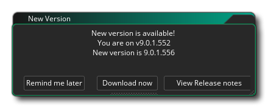
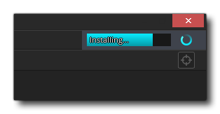

L' GameMaker Studio 2 vérifie périodiquement les mises à jour, puis les télécharge automatiquement. Certaines de ces mises à jour seront facultatives et vous pouvez choisir de ne pas les installer si vous ne le souhaitez pas ou si vous pensez que certaines modifications pourraient casser un projet que vous êtes sur le point de publier. Cependant, certaines mises à jour incluent des corrections ou des améliorations importantes qui ne peuvent être ignorées et GameMaker Studio 2 forcera une mise à jour dans ces cas. 
GameMaker Studio 2 est plus qu'un simple IDE et dispose d'un certain nombre d'outils d'exécution différents qu'il utilise en coulisses pour vous construire des jeux pour les différentes plateformes cibles disponibles. Ces outils sont principalement les différents coureurs et compilateurs requis par chaque plate-forme, et vous pouvez en avoir plusieurs à la fois. Cela signifie que vous pouvez choisir la version du compilateur et la version de coureur à utiliser si vous avez trouvé des problèmes avec la version actuelle ou si vous cherchez une version ou une plate-forme cible très spécifique. Les outils sont automatiquement mis à jour lorsqu'une nouvelle version est disponible, mais vous pouvez ensuite utiliser les préférences de flux d'exécution pour sélectionner celles que vous souhaitez réellement utiliser. Pour plus d'informations sur les mises à jour d'exécution, consultez Préférences - Flux d'exécution.
Notez que le téléchargement et l'installation d'une exécution peuvent prendre quelques minutes, mais vous pouvez voir une barre de progression pour le téléchargement en haut à droite de l'IDE: 